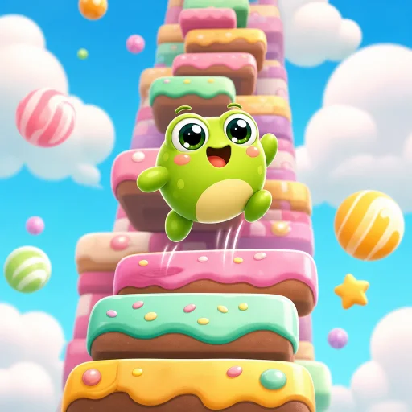

←→ / A D · 터치 좌우로 기울여요

발판을 밟고 하늘 끝까지!랭킹에 이름을 남겨요
개구리가 사탕 발판을 밟고 하늘 끝까지 뛰어오르는 랭킹형 점프 게임입니다. 높이 올라갈수록 아침 하늘이 노을, 보라빛 저녁, 별과 행성이 뜬 밤으로 바뀌어요.
PC는 ←→ 또는 A D, 휴대폰은 화면 왼쪽 · 오른쪽을 눌러 기울여요. 분홍 발판은 움직이고, 과자 발판은 한 번 밟으면 쪼개지고, 노란 스프링은 높이 튀어 올라요.